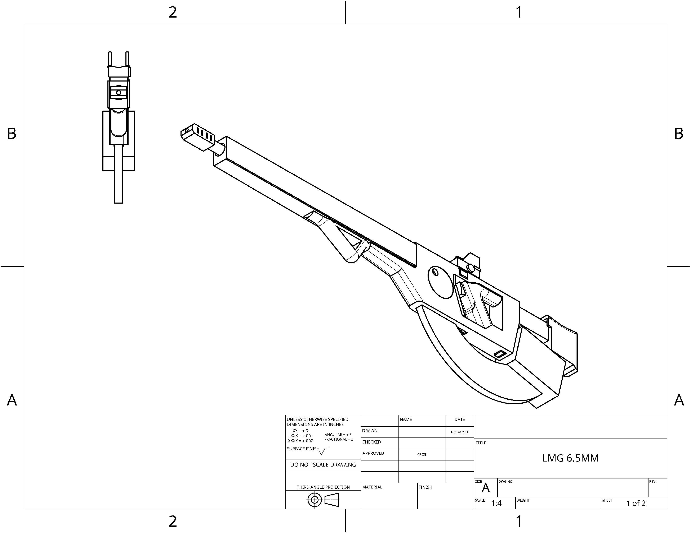
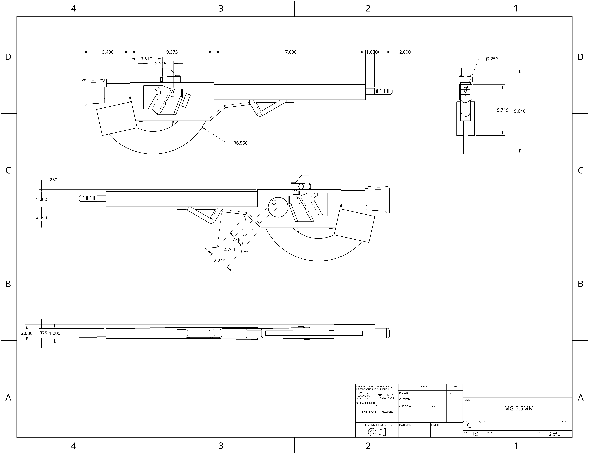

Utilizing chaingun technology in an infantry portable package to circumvent bolt travel space and allow for dynamic changes in rate of fire for a variety of applications.
 | | | | | | |
|---|---|---|
| Damage: | 25 | (Headshot capable) |
| Velocity: | 1200 mps | |
| Armor penetration: | 55mm | |
| Rate of fire: | 950rpm | |
| Magazine size: | 85 |